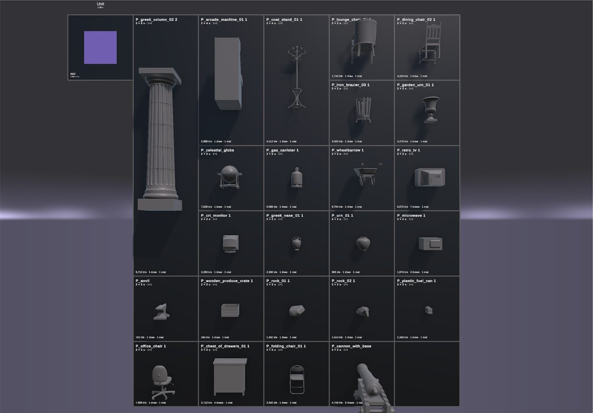
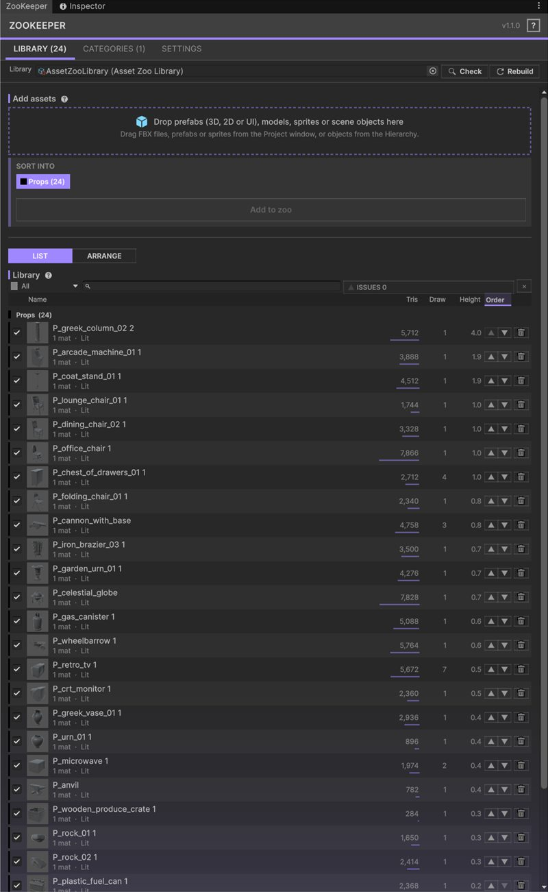
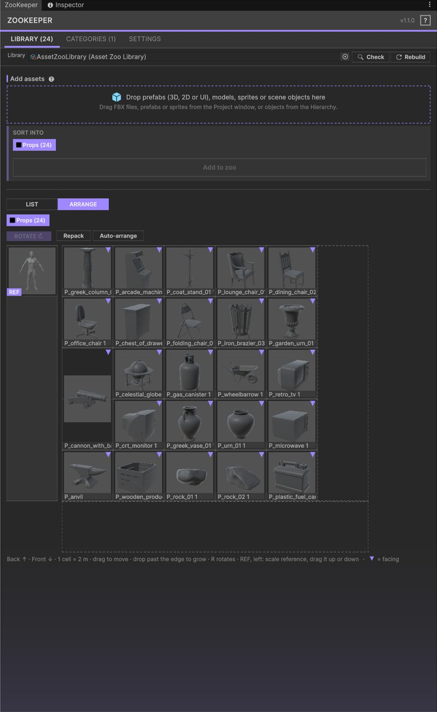
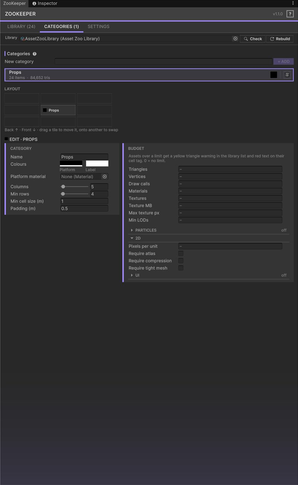
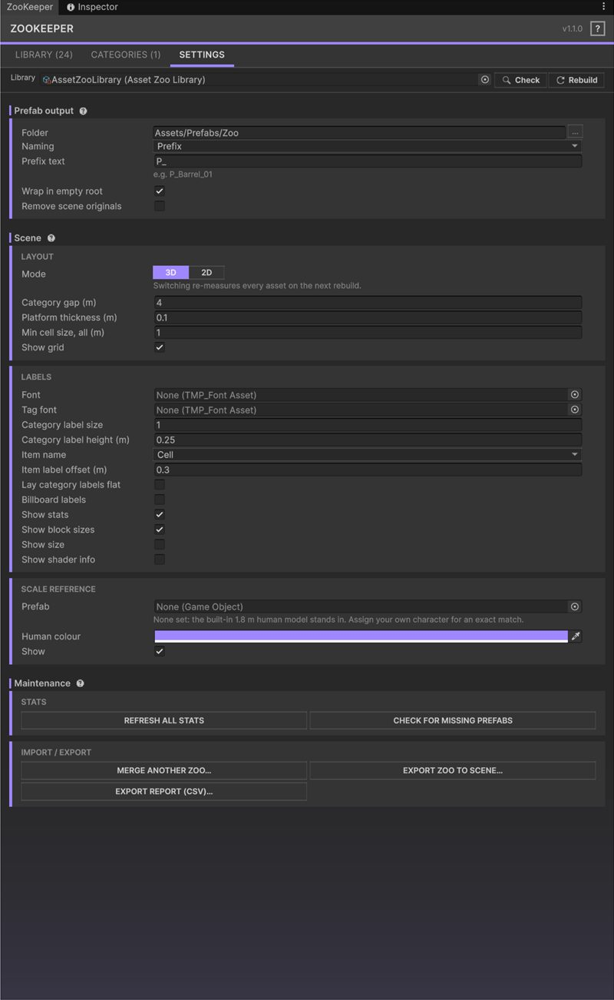

Showcase scene in minutes
Drag prefabs, FBX files, sprites or scene objects in; get platforms, grids, labels and a scale reference.
Unity Editor tool · Version 1.1.0
Lay out, label, budget-check and review a whole prefab library in one scene, from a single library asset.
Get it on the Asset Store Support
What it does
Sort models into categories and ZooKeeper builds a platform per category, places every asset on a packed grid, labels it with live mesh stats, and flags anything broken or over budget. The scene is a disposable rendering of the library, so it can be regenerated at any time instead of hand-placed.
Drag prefabs, FBX files, sprites or scene objects in; get platforms, grids, labels and a scale reference.
Per library: the zoo stands up on the XY plane facing the camera, with sprite stats (pixels, pixels per unit, atlas, compression, mesh type, sorting).
Triangles, vertices, draw calls, materials, LODs, textures, texture memory, size and shader per asset, read from LOD0 and kept current on reimport. Particle systems add max particles, particle mesh tris and flags for noise, collision, lights, sub-emitters and mesh mode.
Set limits once; offenders turn red in the scene, get a badge in the list and show up in a CSV report.
Sort, filter, drag to reorder, batch rename, merge two artists' zoos, export to a standalone scene.
Screenshots





Requirements
com.unity.ugui in Unity 6), used for the zoo labels. If prompted, run Window > TextMeshPro > Import TMP Essential Resources.Quick start
[Zoo] root.A demo scene with ten sample models is included in the package.